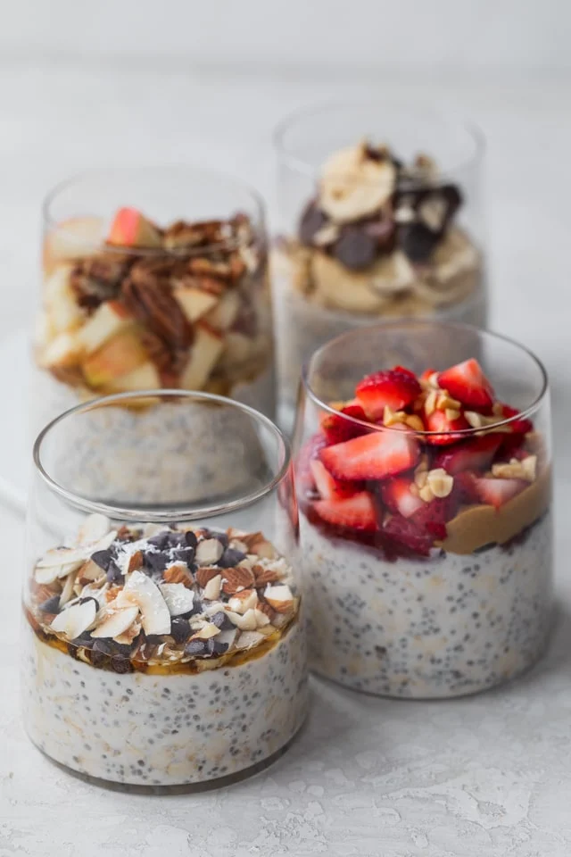

Overnight Oats

Ingredients!
- Oats: This is really the only ingredient that’s non-negotiable. Make sure to use plain old-fashioned oats and not quick oats because the consistency is best with rolled oats. You can also use gluten-free oats. Do not use steel cut oats.
- Milk: For the liquid part, you can actually make this with water! But it’s more common to use milk. You can use full fat, 2% or low-fat milk. You can also use plant-based milk like almond milk, coconut milk, cashew milk or oat milk.
- Chia Seeds (optional): These seeds are packed with tons of nutrition, and they help give the oats a pudding-like texture. So I always like to include them in my base recipe.
- Greek or vegan yogurt (optional): This gives the oats a tangy flavor, creamy texture and boost of protein.
- Vanilla extract (optional):This enhances all the flavors that go into the overnight oatmeal as well as giving it sweetness without any sweetener.
- Sweetener (optional): Use honey or maple syrup to sweeten the mixture, especially because oats can be somewhat bland on their own.
- Toppings: This is where you can have some fun with fresh fruit, dried fruit, nut butters, nuts, seeds and spices (like cinnamon, nutmeg or cardamom). There are so many topping ideas and combinations, and I think that’s what makes this such a great versatile recipe!